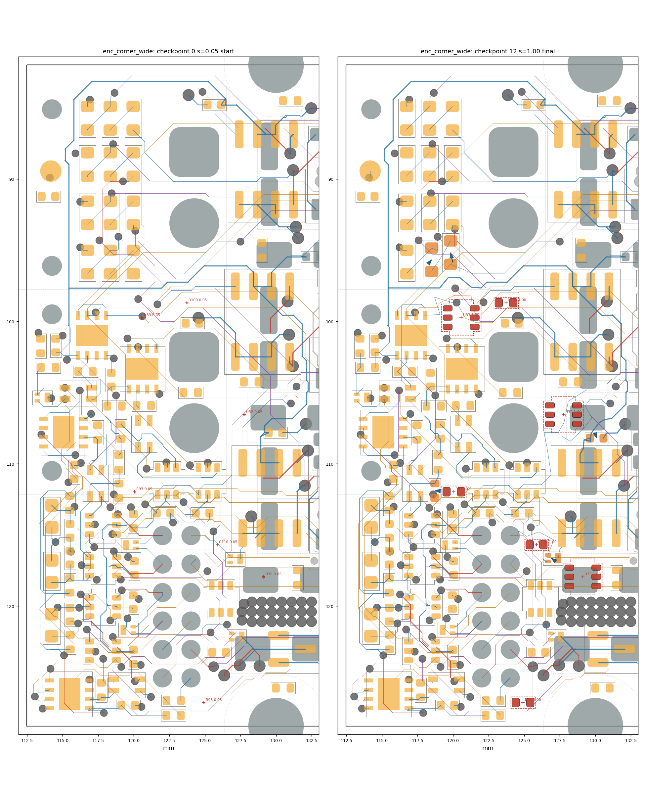
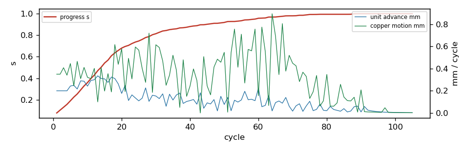

settle run: enc_corner_wide
105 cycles in 12.1 s, progress s = 1.0; 7/7 ghosts born; 5 parts moved; 2/2 reroutes verified in 0 rounds. Gate: 13/13 checkpoints pass (baseline 2 violations); length caps hit: 0; check_sync: True.
Region [112.4, 81.9, 132.5, 128.5]; rules clearance 0.1 mm, hole 0.254, edge 0.3, guard 0.015.
79 movable parts, 1133 dynamic segments, 1266 nodes, 7 ghosts.
Orange pads = movable parts (dark orange = moved); grey = fixed; red = ghosts at their current scale; blue arrows = part displacement.
Copper by layer: F red, B blue, In1 green, In2 purple, In3 brown, In4 teal; static copper grey.


Gate per checkpoint
| step | s | tag | unconnected | new_violations | static_missing | fixed_moved | ok | new_desc |
|---|
| 0 | 0.05 | start | 103 | 0 | 0 | [] | True | [] |
| 1 | 0.103 | | 103 | 0 | 0 | [] | True | [] |
| 2 | 0.224 | | 103 | 0 | 0 | [] | True | [] |
| 3 | 0.328 | | 103 | 0 | 0 | [] | True | [] |
| 4 | 0.429 | | 103 | 0 | 0 | [] | True | [] |
| 5 | 0.502 | | 103 | 0 | 0 | [] | True | [] |
| 6 | 0.609 | | 103 | 0 | 0 | [] | True | [] |
| 7 | 0.705 | | 103 | 0 | 0 | [] | True | [] |
| 8 | 0.805 | | 103 | 0 | 0 | [] | True | [] |
| 9 | 0.902 | | 103 | 0 | 0 | [] | True | [] |
| 10 | 0.995 | reroute | 103 | 0 | 0 | [] | True | [] |
| 11 | 1.0 | | 103 | 0 | 0 | [] | True | [] |
| 12 | 1.0 | final | 103 | 0 | 0 | [] | True | [] |
Ghosts
| ref | site | scale | drift_x | drift_y | born |
|---|
| U30 | (129.12, 117.94) | 1.0 | 0.0 | 0.0 | yes |
| U32 | (127.76, 106.55) | 1.0 | 0.0 | 0.0 | yes |
| U33 | (120.57, 99.73) | 1.0 | 0.0 | 0.0 | yes |
| R97 | (120.06, 111.96) | 1.0 | 0.0 | 0.0 | yes |
| R98 | (124.92, 126.77) | 1.0 | 0.0 | 0.0 | yes |
| R100 | (123.72, 98.69) | 1.0 | 0.0 | 0.0 | yes |
| C110 | (125.87, 115.69) | 1.0 | -0.0 | -0.0 | yes |
Parts moved
| ref | dx | dy | mm | group |
|---|
| R59 | -0.146 | -0.661 | 0.677 | |
| C16 | 0.133 | 0.379 | 0.402 | |
| R88 | -0.231 | -0.013 | 0.231 | |
| R60 | 0.134 | -0.157 | 0.206 | |
| D27 | -0.107 | -0.077 | 0.132 | |
Net length growth (copper inside the region)
| net | region_mm | grown_mm | growth_pct | allow_mm | cap_mm | at_cap |
|---|
| Net-(R59-Pad2) | 2.32 | 0.224 | 9.7 | 0.2 | 0.8 | |
| A_SENSE | 13.55 | 1.061 | 7.8 | 1.355 | 2.711 | |
| /EXT_ANALOG_SW | 20.73 | 1.462 | 7.1 | 4.146 | 10.364 | |
| /ENC_D_DATA | 42.62 | 2.205 | 5.2 | 8.525 | 21.312 | |
| /ENC_D_SW | 34.22 | 1.476 | 4.3 | 6.843 | 17.108 | |
| /MOT_TH | 32.96 | 1.402 | 4.2 | 6.592 | 16.48 | |
| /A_P | 34.37 | 0.892 | 2.6 | 6.875 | 17.187 | |
| /ENC_C_P | 16.0 | 0.266 | 1.7 | 1.6 | 2.4 | |
| VMOT | 27.38 | 0.278 | 1.0 | 8.213 | 27.375 | |
| VMOT_SENSE | 32.42 | 0.106 | 0.3 | 3.242 | 6.484 | |
| /ENC_A_SW | 41.88 | 0.046 | 0.1 | 8.375 | 20.937 | |
| /H1_SW | 28.48 | 0.02 | 0.1 | 5.697 | 14.243 | |
| GND | 99.96 | 0.032 | 0.0 | None | None | |
| +3V3 | 156.25 | -0.092 | -0.1 | 46.876 | 156.252 | |
| /ENC_C_N | 18.39 | -0.019 | -0.1 | 1.839 | 2.758 | |
| /I2C_SCL | 27.88 | -0.086 | -0.3 | 5.576 | 13.939 | |
| /ENC_A_N_SW | 8.72 | -0.19 | -2.2 | 0.872 | 2.0 | |
Stalled units and their blockers
| unit | hard_walled | blocker | net | ref | margin | floor | pos |
|---|
| D27 | | courtyard | | GHOST:U30 | -0.05 | 0.003 | |
Absorbed pressure (where demand died)
| mover | blocker | what | hits |
|---|
| node2433 | pad | J2.2 [/D] | 99 |
| node1135 | pad | J2.2 [/D] | 74 |
Config
{
"name": "enc_corner_wide",
"board": "/home/sequoia/pcb/rp2350-motor-controller-lean-jiggle/hardware/rp2350_driver.kicad_pcb",
"region": [
112.4,
81.9,
132.5,
128.5
],
"rules": {
"guard": 0.015
},
"locked": {
"sides": [
"F"
],
"refs": [
"J1",
"J2",
"J12",
"H3",
"H4"
],
"nets": [
"^/USB_D",
"^/CAN0_"
],
"rects": []
},
"mobility": {
"default": 1.0
},
"groups": {},
"drive": {
"inflate": [
{
"ref": "U30",
"at": "search",
"radius": 14
},
{
"ref": "U32",
"at": "search",
"radius": 14
},
{
"ref": "U33",
"at": "search",
"radius": 14
},
{
"ref": "R97",
"at": "search",
"radius": 14
},
{
"ref": "R98",
"at": "search",
"radius": 14
},
{
"ref": "R100",
"at": "search",
"radius": 14
},
{
"ref": "C110",
"at": {
"near": "U30",
"offset": [
0.0,
0.0
],
"search": 8.0
}
}
]
},
"step": 0.05,
"snapshots": 10,
"cycles": 600,
"data": "/home/sequoia/pcb/rp2350-motor-controller-lean-jiggle/hardware/tools/settle/configs/data/enc_corner_wide"
}
Elastic table
{
"default": {
"k": 0.5,
"allow": 0.2,
"cap": 0.5,
"allow_mm": 0.5,
"cap_mm": 2.0
},
"classes": {
"VMOT": {
"k": 0.2,
"allow": 0.3,
"cap": 1.0,
"allow_mm": 1.0,
"cap_mm": 6.0
},
"power": {
"k": 0.2,
"allow": 0.3,
"cap": 1.0,
"allow_mm": 1.0,
"cap_mm": 6.0
},
"usb_5A": {
"k": 0.2,
"allow": 0.3,
"cap": 1.0,
"allow_mm": 1.0,
"cap_mm": 6.0
},
"low_power": {
"k": 0.2,
"allow": 0.3,
"cap": 1.0,
"allow_mm": 1.0,
"cap_mm": 6.0
}
},
"nets": {
"^GND": {
"k": 0.0,
"allow": 1000000000.0,
"cap": 1000000000.0
},
"^(VMOT|Vdrive|VBUS|\\+3V3|\\+1V1|\\+5V_ISO|/V_ENC|/V_SW)$": {
"k": 0.2,
"allow": 0.3,
"cap": 1.0,
"allow_mm": 1.0,
"cap_mm": 6.0
},
"^Net-\\(U(1|6|7|12)-(HO|LO|VB)\\)$": {
"k": 4.0,
"allow": 0.0,
"cap": 0.05,
"allow_mm": 0.0,
"cap_mm": 0.3
},
"^/2[ABCD]G[HL]$": {
"k": 4.0,
"allow": 0.0,
"cap": 0.05,
"allow_mm": 0.0,
"cap_mm": 0.3
},
"^Net-\\(Q[1-4]-[BE]\\)$": {
"k": 4.0,
"allow": 0.0,
"cap": 0.05,
"allow_mm": 0.0,
"cap_mm": 0.3
},
"^Net-\\((R(24|59|62|67|70)|D\\d+)-": {
"k": 2.0,
"allow": 0.05,
"cap": 0.15,
"allow_mm": 0.2,
"cap_mm": 0.8
},
"^/USB_D": {
"k": 4.0,
"allow": 0.0,
"cap": 0.02,
"allow_mm": 0.0,
"cap_mm": 0.1
},
"^/CAN0_": {
"k": 4.0,
"allow": 0.0,
"cap": 0.02,
"allow_mm": 0.0,
"cap_mm": 0.1
},
"^/ENC_[A-D]_(P|N)(_SW)?$": {
"k": 1.0,
"allow": 0.1,
"cap": 0.15,
"allow_mm": 0.5,
"cap_mm": 2.0
},
"^/ENC_[A-D]_TRX_": {
"k": 1.0,
"allow": 0.1,
"cap": 0.2,
"allow_mm": 0.5,
"cap_mm": 2.0
},
"^[ABCD]_PWM_": {
"k": 1.0,
"allow": 0.1,
"cap": 0.25,
"allow_mm": 0.5,
"cap_mm": 3.0
},
"SENSE": {
"k": 1.0,
"allow": 0.1,
"cap": 0.2,
"allow_mm": 0.5,
"cap_mm": 2.0
}
}
}
Log tail
2500 nodes, 2367 sub-segments, 79 movable parts (69 with bound copper), 71 fixed nodes
grandfathered 171 shipped at/below-guard pairs (73 below model rule), 2125 same-net contacts held as attachments
margin census over rule (20um bins, <0 first): -20:6 +0:395 +20:92 +40:182 +60:326 +80:653 +100:388 +120:549 +140:746 +160:581 +180:88652
checkpoint 1: s=0.050 start
cycle 1: s=0.077 ghosts=0/7 blocked=0 adv=0.200mm copper=0.350mm [1s]
checkpoint 2: s=0.103
cycle 5: s=0.190 ghosts=0/7 blocked=0 adv=0.243mm copper=0.446mm [1s]
checkpoint 3: s=0.224
checkpoint 4: s=0.328
cycle 10: s=0.359 ghosts=0/7 blocked=0 adv=0.242mm copper=0.322mm [2s]
checkpoint 5: s=0.429
checkpoint 6: s=0.502
cycle 15: s=0.541 ghosts=0/7 blocked=0 adv=0.308mm copper=0.198mm [2s]
checkpoint 7: s=0.609
cycle 20: s=0.680 ghosts=2/7 blocked=0 adv=0.177mm copper=0.579mm [2s]
checkpoint 8: s=0.705
cycle 25: s=0.746 ghosts=3/7 blocked=0 adv=0.109mm copper=0.568mm [3s]
checkpoint 9: s=0.805
cycle 30: s=0.814 ghosts=3/7 blocked=0 adv=0.153mm copper=0.616mm [3s]
cycle 35: s=0.856 ghosts=5/7 blocked=0 adv=0.117mm copper=0.521mm [4s]
cycle 40: s=0.881 ghosts=5/7 blocked=0 adv=0.112mm copper=0.244mm [4s]
checkpoint 10: s=0.902
cycle 45: s=0.902 ghosts=5/7 blocked=0 adv=0.091mm copper=0.245mm [5s]
cycle 50: s=0.919 ghosts=5/7 blocked=0 adv=0.077mm copper=0.547mm [6s]
cycle 55: s=0.935 ghosts=5/7 blocked=1 adv=0.117mm copper=0.711mm [6s]
cycle 60: s=0.958 ghosts=5/7 blocked=0 adv=0.223mm copper=0.155mm [7s]
cycle 65: s=0.970 ghosts=5/7 blocked=0 adv=0.094mm copper=0.692mm [8s]
cycle 70: s=0.981 ghosts=5/7 blocked=0 adv=0.017mm copper=0.449mm [8s]
cycle 75: s=0.993 ghosts=5/7 blocked=0 adv=0.106mm copper=0.131mm [9s]
cycle 80: s=0.995 ghosts=6/7 blocked=0 adv=0.021mm copper=0.348mm [10s]
cycle 85: s=0.995 ghosts=6/7 blocked=1 adv=0.039mm copper=0.144mm [10s]
ghost U32 idle 20 cycles at scale 0.965: local reroute of 2 clamping chains
reroute round 1.1: 2/2 chains rerouted (2 candidates)
checkpoint 11: s=0.995 reroute
checkpoint 12: s=1.000
all ghosts born / targets reached after 89 cycles; relaxing 25 cycles
cycle 90: s=1.000 ghosts=7/7 blocked=0 adv=0.010mm copper=0.209mm [11s]
cycle 95: s=1.000 ghosts=7/7 blocked=0 adv=0.012mm copper=0.006mm [11s]
cycle 100: s=1.000 ghosts=7/7 blocked=0 adv=0.005mm copper=0.004mm [12s]
cycle 105: s=1.000 ghosts=7/7 blocked=0 adv=0.002mm copper=0.002mm [12s]
checkpoint 13: s=1.000 final
captured 106 frames, 8 line-search traces -> frames.json
wrote traj.json (13 checkpoints) + settle_report.json in 12s: 5 parts moved, 1 nets over allowance, 0 length-cap hits, 0 board-edge hits — run emit.py